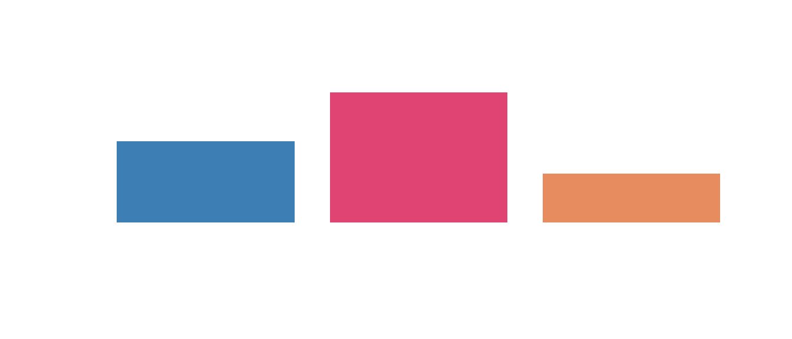
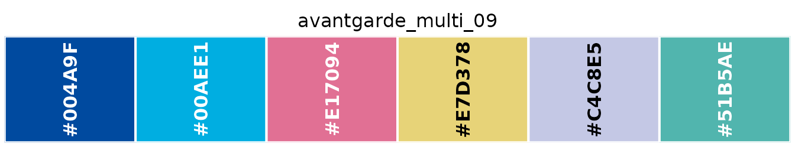
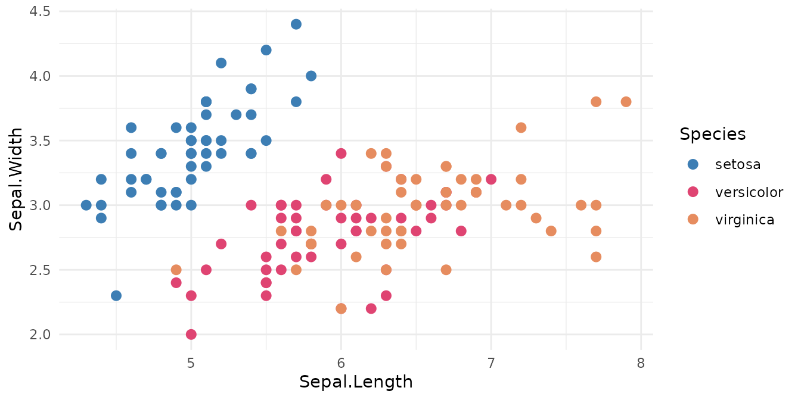
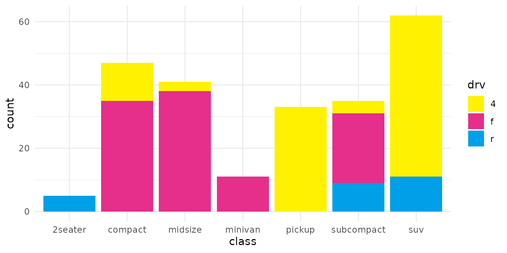
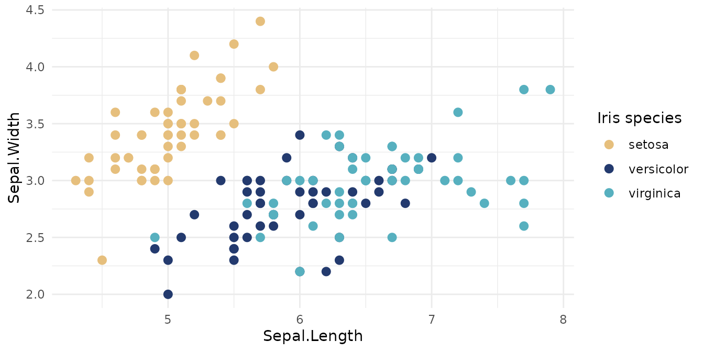

Palettes are objects
A palette is a character vector of hex colours, exported under its own name:
library(japanesecolors)
kawaii_tri_07
#> [1] "#3D7EB4" "#DF4472" "#E68C5F"So it works anywhere R takes colours:

To look at one:
show_palette(avantgarde_multi_09)
Palette IDs
IDs have the form
<collection>_<type>_<nn>:
| Part | Values |
|---|---|
| collection |
retro, minimalism, kawaii,
avantgarde
|
| type |
bi (bicolor), tri (tricolor),
four (four-color), multi (multicolor) |
| number | zero-padded, contiguous within each collection and type |
These IDs are stable API. Descriptive names may be added later as aliases; the numbered IDs will keep working.
Browsing
palettes() returns the catalogue as a data frame:
head(palettes()[, c("id", "collection", "type", "n_colors", "status")])
#> id collection type n_colors status
#> 1 retro_bi_01 retro bicolor 2 transcribed
#> 2 retro_bi_02 retro bicolor 2 transcribed
#> 3 retro_bi_03 retro bicolor 2 transcribed
#> 4 retro_bi_04 retro bicolor 2 transcribed
#> 5 retro_bi_05 retro bicolor 2 transcribed
#> 6 retro_bi_06 retro bicolor 2 transcribedIt filters by collection, matching type and number of colours:
palettes("minimalism", type = "bicolor")[, c("id", "n_colors")]
#> id n_colors
#> 1 minimalism_bi_01 2
#> 2 minimalism_bi_02 2
#> 3 minimalism_bi_03 2
#> 4 minimalism_bi_04 2
#> 5 minimalism_bi_05 2
#> 6 minimalism_bi_06 2
#> 7 minimalism_bi_07 2
#> 8 minimalism_bi_08 2
#> 9 minimalism_bi_09 2
#> 10 minimalism_bi_10 2
#> 11 minimalism_bi_11 2
#> 12 minimalism_bi_12 2
# anything wide enough for six groups
palette_names(n = 6)
#> [1] "retro_multi_04" "retro_multi_06" "retro_multi_08"
#> [4] "retro_multi_09" "minimalism_multi_01" "minimalism_multi_04"
#> [7] "kawaii_multi_02" "avantgarde_multi_01" "avantgarde_multi_02"
#> [10] "avantgarde_multi_05" "avantgarde_multi_07" "avantgarde_multi_09"collections() summarises the four collections:
collections()[, c("collection", "label", "n_palettes", "n_review")]
#> collection label n_palettes n_review
#> 1 retro Retro 55 7
#> 2 minimalism Minimalism 28 0
#> 3 kawaii Kawaii 30 2
#> 4 avantgarde Avant Garde 36 4Choosing a palette programmatically
When the palette is decided at runtime, look it up by ID:
get_palette("retro_four_03")
#> [1] "#E72922" "#1E53A4" "#006637" "#CAB06B"
# the first n colours, or reversed
get_palette("retro_four_03", n = 2)
#> [1] "#E72922" "#1E53A4"
get_palette("retro_four_03", reverse = TRUE)
#> [1] "#CAB06B" "#006637" "#1E53A4" "#E72922"Palettes are curated categorical sets and are never stretched. Asking for more colours than a palette holds is an error, not a recycled or interpolated colour:
get_palette("kawaii_tri_07", n = 5)
#> Error:
#> ! "kawaii_tri_07" has 3 colours; 5 requested. Pick a larger palette -- colours are not recycled or interpolated.palettes(n = 5) will tell you which palettes are big
enough.
ggplot2
library(ggplot2)
ggplot(iris, aes(Sepal.Length, Sepal.Width, colour = Species)) +
geom_point(size = 2.5) +
scale_colour_japanesecolors("kawaii_tri_07") +
theme_minimal()
ggplot(mpg, aes(class, fill = drv)) +
geom_bar() +
scale_fill_japanesecolors("avantgarde_tri_06") +
theme_minimal()
All three take reverse, na.value, and
anything else scale_*_manual() accepts:
ggplot(iris, aes(Sepal.Length, Sepal.Width, colour = Species)) +
geom_point(size = 2.5) +
scale_colour_japanesecolors("retro_tri_02", reverse = TRUE, name = "Iris species") +
theme_minimal()
Being plain vectors, they also work with
scale_colour_manual(), which lets you pin colours to
specific categories:
cols <- setNames(kawaii_tri_07, levels(iris$Species))
ggplot(iris, aes(Sepal.Length, Sepal.Width, colour = Species)) +
geom_point(size = 2.5) +
scale_colour_manual(values = cols) +
theme_minimal()
For packages that expect a palette function of
n, use japanesecolors_pal():
pal <- japanesecolors_pal("minimalism_multi_05")
pal(3)
#> [1] "#5BAE7F" "#B1C06B" "#EDDE7B"Transcription status
Colour values were read by hand from printed RGB labels. Readings that were not reliably legible are recorded as provisional:
palettes_needing_review()[1:3, c("palette_id", "order", "hex")]
#> palette_id order hex
#> 1 retro_bi_13 1 #F4C03A
#> 2 retro_bi_14 1 #3071B9
#> 3 retro_bi_14 2 #E34950They are exported like any other, and palettes()
includes them by default with status == "review". For fully
transcribed values only:
See the package README for where the data came from.